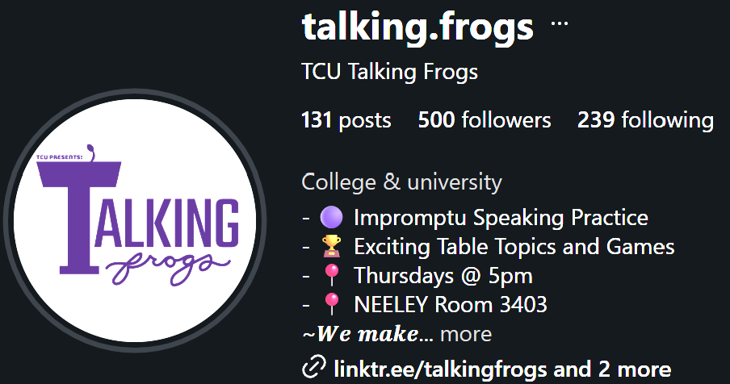
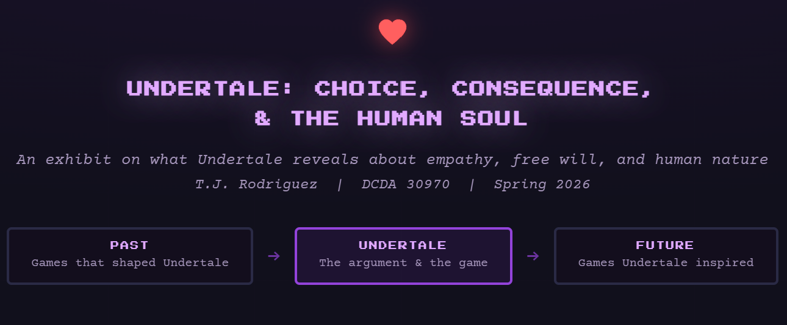
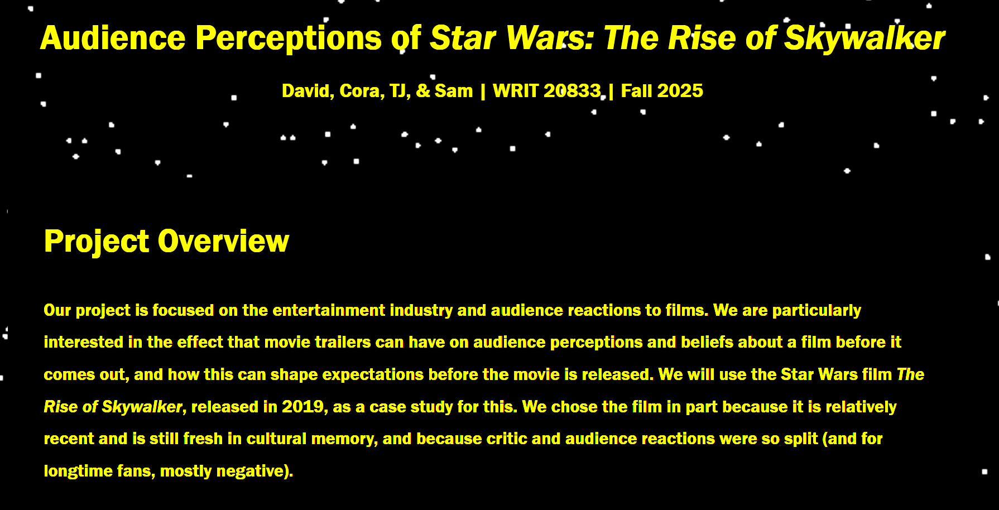

My Specialties
As a current student at TCU, my specialties are geared towards topics such as coding, data analysis, criminal justice, and understanding large language models.
Information On Project
This portfolio features my technological skills, former assignments, methods of contact, and further background information through the about page.
Highlights of Project
Among the highlights within this portfolio are different digital culture projects that I am confident in for their quality and my own sharpening of digital media skills.
Skills
-
HTML
Ongoing learner. Knowledgable and comfortable in writing content for websites.
-
CSS
Ongoing learner. Basic understanding how to set up tokens and root factors to design a website with vibrant colors and images.
-
Python
Ongoing learner. Knowledgable in finding, scraping, and generating csv data files for Google Collab.
-
JavaScript
Do not have firm foundation in skill yet. Still learning and will begin to grow in this field later in the semester.
My Work
Below are notable projects and media handling that I have proudly created and performed at TCU.
-
Personal Portfolio
This current site that you are reading. Built from scratch in HTML and CSS.
-

Talking Frogs Instagram
Actively in charge of creating and posting the weekly table topic recaps from each club meeting on Thursday evenings. View my weekly recap work on Instagram.
-

Digital Culture Analysis on Undertale
Created a website inspired by Toby Fox's Undertale, where I argued the game and similar titles revealed hidden characteristics of the human soul and its potential to bestow empathy. View the project on GitHub.
-

Digital Culture / Data Analysis on Star Wars: The Rise of Skywalker
Participated in a group project utilizing the Python, HTML, and CSS languages to analyze fan reactions to the Star Wars: Rise of Skywalker official trailer before the film's release compared to audience perception after the movie released. Findings concluded that the film was equally viewed negatively among trolls or those who argued that the film was a nostalgic cash grab. View this project on GitHub.
Contact
The best way to reach me is by email.